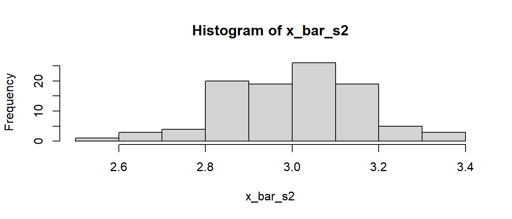
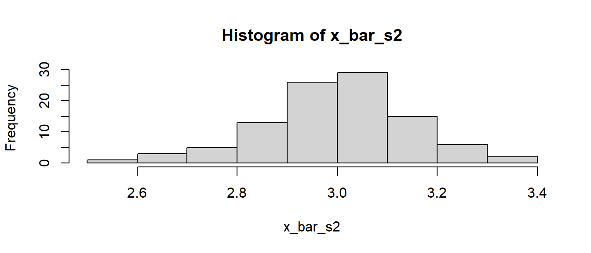

> 3 < 6[1] TRUE> 6 < 3[1] FALSE> 6 == 6[1] TRUENachdem die Grunddatentypen in R kennengelernt wurden, beschäftigt sich das folgende Kapitel mit drei zentralen Konstrukten der Programmierung. Das sind zunächst Vergleiche, darauf aufbauend bedingte Anweisungen und Verzweigungen sowie Schleifen.
Bei Vergleichen wird zunächst einmal genau das gemacht, was im Namen drinsteht. Es werden Sachen miteinander verglichen. Bei Programmieren mit R sind diese Dinge meistens Zahlen. Wenn Zahlen miteinander verglichen werden, dann kommen zunächst die aus der Schule bekannten Grundoperatoren zum Einsatz (siehe Tabelle 3.1).
| Operator | Vergleich |
|---|---|
| \(<\) | kleiner |
| \(>\) | größer |
| \(<=\) | kleiner oder gleich |
| \(>=\) | größer oder gleich |
| \(==\) | gleich |
Der einzige Vergleichsoperator, der etwas ungewohnt erscheinen dürfte, ist der Vergleich auf Gleichheit ==. Das einfache Gleichheitszeichen = hät in R eine ähnlich Bedeutung wie der Zuweisungsoperator <-. Daher wird ein anderes Zeichen verwendet um einen Vergleich auf Gleichheit durchzuführen, und das ist eben das doppelte Gleichheitszeichen ==. Letztendlich ist die Verwendung von == nur aber wieder ein Teil der Syntax, die sich die Anwenderin von R merken muss. Wichtiger: In R ist das Ergebnis eines Vergleichs ein logischer Wert die bereits im vorhergehenden Kapitel behandelt wurden.
> 3 < 6[1] TRUE> 6 < 3[1] FALSE> 6 == 6[1] TRUEIn allen drei Fällen wir als Rückgabewert des Vergleichsausdrücke ein logischer Wert erzeugt. Entsprechend wenn der Vergleich wahr ist, folgt ein TRUE und entsprechend ein FALSE wenn der Vergleich nicht wahr ist. Die Vergleichsoperatoren funktionieren auch mit Vektoren.
> v_1 <- 1:6
> v_2 <- 2:7
> v_1 < 3[1] TRUE TRUE FALSE FALSE FALSE FALSE> 3 < v_1[1] FALSE FALSE FALSE TRUE TRUE TRUE> v_1 < v_2[1] TRUE TRUE TRUE TRUE TRUE TRUEWenn beide Objekte Vektoren sind, wird der Vergleich Element für Element durchgeführt, während bei einem Vergleich mit einem Skalar alle Vektorelemente mit dem Skalar verglichen werden. In beiden Fällen ist das Ergebnis des Ausdrucks wieder ein Vektor der entsprechenden Länge mit logischen Einträgen.
Zusammen mit dem Subsetting-Operator [] können mit relativ wenig Aufwand Werte, die eine bestimmte Bedingung erfüllen, aus einem Vektor extrahiert werden. Sollen zum Beispiel aus dem Vektor v_1 alle Werte kleiner als \(4\) extrahier werden, kann dies mit der folgenden Anweisung erreicht werden.
> v_1[v_1 < 4][1] 1 2 3Warum hat das funktioniert? Zuerst wird der Vergleich v_1 < 4 von R durchgeführt, der Rückgabewert dieser Operation ist ein Vektor mit logischen Werten entsprechend des Vergleichs.
> v_1 < 4[1] TRUE TRUE TRUE FALSE FALSE FALSEDer logische Vektor hat die gleiche Länge wie v_1 und kann daher direkt dazu benutzt werden, Elemente aus v_1 zu indexieren. D.h. diejenigen Elemente, die die Bedingung erfüllen, können mit dem Subsetting-Operator [] extrahiert werden.
Da logische Werte mit den logischen Operatoren verknüpft werden können, ermöglicht dies auch komplizierte Vergleiche durchzuführen. Sollen zum Beispiel alle Elemente die entweder kleiner \(3\) oder größer \(4\) sind extrahiert werden oder alle Elemente die größer oder gleich \(3\) und kleiner oder gleich \(4\) können dazu die folgenden Vergleiche verwendet werden.
> v_1[v_1 < 3 | v_1 > 4][1] 1 2 5 6> v_1[v_1 >= 3 & v_1 <= 4][1] 3 4Aufbauen auf Vergleichen können nun bedingte Anweisungen und Verzweigungen erstellt werden.
In Abbildung 3.1 ist das Grundgerüst einer bedingten Anweisung bzw. Verzweigung in Form einer Grafik dargestellt. Der Ablauf folgt von Oben nach Unten.
flowchart Z(Start) --> A[condition] A[condition] --> B[TRUE] A[condition] --> C[FALSE] B --> D[Ausdruck A] C --> E[Ausdruck B]
Die bedingte Anweisung startet zunächst mit einem Ausdruck condition der zum Beispiel ein Vergleich wie x < 3 sein kann. In Abhängigkeit von dem logischen Wert dieser Anweisung, der entweder WAHR oder FALSCH sein kann, und wird dann entsprechend entweder Ausdruck A oder Ausdruck B ausgeführt. Syntaktisch wird die bedingte Anweisung in R folgendermaßen ausgedrückt.
if, gefolgt von einer Klammer mit dem Ausdruck condition, der zu einem logischen Wert (TRUE, FALSE) evaluiert wird.
condition TRUE ist, wird der AusdruckA innerhalb der geschweiften Klammern ausgeführt.
condition FALSE ist, wird der else-Zweig, bzw. der AusdruckB zwischen den geschweiften Klammern nach else ausgeführt.
Hier ein einfaches Beispiel. Zunächst werden drei Variablen m, a und b definiert.
> m <- 0
> a <- 10
> b <- 20Nun folgt die if-Verzweigung. In Abhängigkeit davon ob a kleiner als bist, soll der Variablen m entweder der Wert \(10\) oder der Wert \(20\) zugewiesen werden. Ausgedrückt in R folgt daraus.
> if (a < b) {
+ m <- 10
+ } else {
+ m <- 20
+ }
> m[1] 10Was passiert hier? Der Wert von m wird unterschiedlich belegt, je nachdem welche Werte a und b haben.
Das ifelse-Konstrukt erlaubt es daher unterschiedliche Anweisungen in einem Programmen, in Abhängigkeit von bestimmten Bedingungen, ausführen zu lassen.
Ein weiteres Beispiel, wäre zum Beispiel den Absolutwert einer Variablen zu bestimmen. Sei eine Variable x geben, mit deren Wert nicht direkt ersichtlich wird und im weiteren Programmverlauf ist es wichtig sicher zu stellen, dass x immer den positiven Wert hat.
> x <- -3
> if (x < 0) {
+ x <- -1 * x
+ }
> x[1] 3Hier fällt der else-Teil weg, da wenn x nicht kleiner \(0\) ist, dann ist der Wert von x positiv und muss somit nicht verändert werden.
Das if-else-Konstrukt auch ineinander verschachtelt angewendet werden. Sei zum Beispiel wieder eine Variable x gegeben und in deren Abhängigkeit soll eine weitere Variable y mit unterschiedlichen Werten belegt werden, nach dem Muster:
\[\begin{equation*} y = \begin{cases} x < 0 & 3 \\ 0 <= x < 10 & 30 \\ x >= 10 & 300 \end{cases} \end{equation*}\]
Um diese dreifache Möglichkeit abzubilden, werden können zwei Unterteilungen in einer übergeordneten Unterteilung geschachtelt.
> y <- 0
> x <- 3
> if (x < 0) {
+ y <- 3
+ } else {
+ if (x < 10) {
+ y <- 30
+ } else {
+ y <- 300
+ }
+ }
> y[1] 30Hierbei ist es hilfreich im Code die Einrückungen zu beachten. Diese haben zwar keine Bedeutung für R aber helfen dabei sicherzustellen, dass der Programmablauf wie gewünscht programmiert wurde.
for-SchleifenAls weiteres Programmierkonstrukt kommen nun Schleifen. Schleifen sind eine der Paradedisziplinen von Computern: Eine Schleife ermöglicht es, Anweisungen wiederholt auszuführen. Soll zum Beispiel eine Liste oder ein Vektor durchlaufen werden und für jedes Element sollen immer eine wiederkehrende Anweisungen ausgeführt werden, dann ist die Schleife das Mittel der Wahl. Die Syntax für eine Schleife in R lautet:
for, gefolgt von einer Klammer. In der Klammer werden zwei Ausdrücke benötigt: Eine Variable, die hier variable heißt, fungiert als Schleifenzähler. Der Schleifenzähler durchläuft die Einträge der Variablen sequenz einen nach dem anderen. In den meisten Fällen handelt es sich hier um einen Vektor und es werden die Elemente des Vektor nacheinander durchlaufen.
variable mit einem neuen Wert belegt worden ist, wird der Ausdruck zwischen den geschweiften Klammern {} ausgeführt. Der jeweilige aktuelle Wert von variable steht dabei im Ausdruck zur Verfügung. Der Code zwischen den geschweiften Klammern wird als Schleifenblock bezeichnet.
Tatsächlich ist die Beschreiubng komplizierter, als der tatsächliche Ablauf. Ein einfaches Beispiel:
> for (i in 1:5) {
+ print(i)
+ }[1] 1
[1] 2
[1] 3
[1] 4
[1] 5Die Variable i stellt in diesem Beispiel den Schleifenzähler. D.h. i wird nacheinadner mit den Werten aus der Sequenz belegt. Die Sequenz ist hier der Vektor 1:5, d.h. i nimmt nacheinander die Werte von \(1\) bis \(5\) an. Für den Schleifenzähler hat es sich in der Informatik eingebürgert, wenn möglich, die Bezeichner i, j oder k zu verwenden, ähnlich wie für Indexvariablen in der Mathematik. Eine Iteration besteht also aus den Schritten, i mit dem nächsten Element aus aus 1:5 belegen und dann die Anweisungen zwischen den geschweiften Klammern ausführen. In diesem Fall steht hier nur eine einzige Anweisung, nämlich print(i), d.h. es wird der jeweilig aktuelle Wert von i ausgegeben. Dies führt zu der Ausgabe der jeweiligen Werte 1, 2, 3, 4, 5.
Die Sequenz hätte auch in Form eines Vektors in einer Variablen vorliegen können.
> s <- 1:5
> for (i in s) {
+ print(i)
+ }[1] 1
[1] 2
[1] 3
[1] 4
[1] 5Sei das Beispiel nun etwas kleinteiliger analysiert. Dazu wird die cat()-Funktion verwendet, um Werte auf der Kommandozeile auszugeben. Das Zeichen \n ist lediglich ein Sonderzeichen für eine neue Zeile, damit die Ausgaben untereinander und nicht nebeneinander stehen.
> for (i in 1:5) {
+ cat('Schleifenkörper wird ausgeführt\n')
+ cat('Schleifenzähler i =', i, '\n')
+ }Schleifenkörper wird ausgeführt
Schleifenzähler i = 1
Schleifenkörper wird ausgeführt
Schleifenzähler i = 2
Schleifenkörper wird ausgeführt
Schleifenzähler i = 3
Schleifenkörper wird ausgeführt
Schleifenzähler i = 4
Schleifenkörper wird ausgeführt
Schleifenzähler i = 5 Was passiert in dem Code? Es ist jetzt hoffentlich einfacher nachzuvollziehen wie i Element für Element mit den Einträgen aus dem Vektor belegt wird und danach jedes Mal der Ausdruck zwischen den Klammern ausgeführt wird.
Eine Anwendung die oft vorkommt, verwendet den Schleifenzähler als Index für Einträge in einen anderen Vektor. Sei ein Vektor mit den Zeichenketten "mama", "papa", "daughter" und "son" gegeben, und diese Werte sollen der Reihe nach ausgegeben werden. Dies könnte zu folgendem Programm führen.
> vec <- c('mama','papa','daughter','son')
> for (i in 1:4) {
+ cat('Ausdruck wird ausgeführt\n')
+ cat('i =', i, ': ', vec[i], '\n')
+ }Ausdruck wird ausgeführt
i = 1 : mama
Ausdruck wird ausgeführt
i = 2 : papa
Ausdruck wird ausgeführt
i = 3 : daughter
Ausdruck wird ausgeführt
i = 4 : son Da die Variable vec ebenfalls ein Vektor ist, nur eben mit Zeichenketten, könnte dies auch so erreicht werden:
> for (i in vec) {
+ cat('Ausdruck wird ausgeführt\n')
+ cat('i =', i, '\n')
+ }Ausdruck wird ausgeführt
i = mama
Ausdruck wird ausgeführt
i = papa
Ausdruck wird ausgeführt
i = daughter
Ausdruck wird ausgeführt
i = son Wieder wird nacheinander der Schleifenzähler i mit den Elementen aus der Sequenz belegt, gefolgt von der Ausführung des Schleifenkörpers.
Beispiel 3.1 Sei der folgende Anwendungsfall gegeben: Es wurde die vertikale Höhe des COM bei drei Sprüngen aufgenommen und es soll aus den drei Kurven jeweils die maximale Höhe extrahieren werden. Seien die folgenden, zugegebenermaßen sehr kurzen, drei Kurven gegeben, die alle in einer Liste hinterlegt wurden.
> com_kurven <- list(s1 = c(1,2,3,2,1),
+ s2 = c(1,2,3,4,3,2,1),
+ s3 = c(1,1,2,5,4,3,2,1))Der Einfachheit halber wurden hier nur sehr “übersichtliche” Kurven verwendet. Da die Signale in einer Liste hinterlegt sind, kann durch die einzelnen Elemente mittels des [[]]-Operators iteriert werden. Zunächst wird ein Vektor com_max_hoehen definiert, der die Maximalhöhen aufnimmt. Diese werden nun mittels der max()-Funktion bestimmt. Mit einer for-Schleife kann nun durch die Elemente von com_kurven iteriert werden und der jeweilige maximale Wert extrahiert werden. Der SChleifenzähler i wird dabei dazu verwendet einmal die COM-Kurven zu extrahieren und dann die Maximalwerte in com_max_hoehen zu speichern.
> com_max_hoehen <- numeric(3)
> for (i in 1:3) {
+ com_max_hoehen[i] <- max(com_kurven[[i]])
+ }
> com_max_hoehen[1] 3 4 5Tatsächlich ist die Anwendung der for-Schleifen seltener als in anderen Programmiersprachen, da für viele Anweisungen sogenannte vektorisierte Funktionen zur Verfügung stehen. D.h., soll ein Vektor von Werten bearbeitet werden, dann arbeitet eine vektorisierte Funktion alle Elemente gleichzeitig ab und ist dabei meistens noch schneller. Im Hintergrund kann dann zwar immer noch eine for-Schleife zur Anwendung kommen, dies ist jedoch für die Benutzerin transparent. Ein Beispiel könnte ein Vektor mit Zeichenketten sein, von denen nur immer der letzte Buchstabe benötigt wird.
> vec <- c("P1","P2","P3")
> vec[1] "P1" "P2" "P3"Dies könnte wieder mit einer for-Schleife und der substr()-Funktion erreicht werden.
> for (s in vec) {
+ print(substr(s, 2, 3))
+ }[1] "1"
[1] "2"
[1] "3"Die substr()-Funktion ist jedoch vektorisiert und kann direkt auf Zeichenkettenvektoren arbeiten. Daher wird mit der folgenden Anweisung das gleiche Ergebnis erreicht.
> substr(vec, 1, 3)[1] "P1" "P2" "P3"Diese Lösung hat auch noch den Vorteil, dass das Ergebnis direkt als Vektor vorliegt.
Bevor größere Programme mit for-Schleifen erstellt werden, ist es meistens sinnvoll, zunächst nach vektorisierten Lösungen zu schauen, da diese meistens schneller laufen und zu deutlich einfacher zu verstehenden Programmen führen.
Insgesamt ist eine for-Schleife ein Programmierkonstrukt, das immer wieder auftritt und daher bekannt sein sollte.
forZur Vertiefung schauen wir uns ein längeres Beispiel für eine for-Schleife an.
Problemstellung: Wir wollen eine Abschätzung darüber treffen, welche Unterschiede zwischen zwei Gruppen zu erwarten sind bei unterschiedlichen Treatments. Die Gruppen haben beide eine Größe von \(n_1 = n_2 = n = 20\). Aus der Literatur wissen wir, dass die Gruppe unter Treatment 1 einen Mittelwert von \(\mu_1 = 10\), während unter Treatment 2 im Mittel ein Wert von \(\mu_2 = 15\) zu erwarten ist. Das Beispiel ist abstrakt, aber die Mittelwerte könnten zum Beispiel Weiten beim Medizinballwurf repräsentieren. Wir wollen jetzt abschätzen, welchen Unterschied wir zwischen den Gruppen erwarten würden, wenn beide Gruppen eine Standardabweichung von \(\sigma = 2\) aufweisen. Dazu seien erst mal die Randwerte der Simulation definiert.
> n <- 20
> mu_1 <- 10
> mu_2 <- 15
> sigma <- 2Die Werte in den Gruppen folgen einer Normalverteilung. In R können wir Zufallsstichproben der Größe \(n\) aus einer Normalverteilung mit Mittelwert \(\mu\) und Standardabweichung \(\sigma\) mittels der Funktion rnorm(n, mu, sigma) erzeugen. D.h. ein Durchgang der Simulation würde wie folgt aussehen.
mean() jeweils gemittelt und der Unterschied wird berechnet
Es wird der folgende Werte für den Unterschied beobachtet.
> delta[1] -3.61618Nun soll diese Simulation nicht nur einmal, sondern ganz oft, z.B. \(n_{\text{sim}} = 1000\) wiederholt werden. Dies ermöglicht eine realistische Abschätzung über die zu erwartenden Werte zu erhalten. D.h. es soll wiederholt die gleiche Anweisung durchgeführt werden, was perfekt zur for-Schleife passt.
> n_sim <- 1000
> for (i in 1:n_sim) {
+ stichprobe_1 <- rnorm(n, mu_1, sigma)
+ stichprobe_2 <- rnorm(n, mu_2, sigma)
+ delta <- mean(stichprobe_1) - mean(stichprobe_2)
+ }Nun wurde zwar die Schleife 1000-mal ausgeführt, aber leider sind die einzelnen Unterschiede nicht mehr vorhanden, da delta bei jeder Iteration immer mit dem aktuellen Wert überschrieben wird. D.h. es ein Platz benötigt, um die jeweiligen Ergebnisse abzuspeichern. Dafür wird ein Vektor erstellt, der ausreichend bzw. genau so viele Einträge wie abzuspeichernde Werte hat. Mit der Funktion numeric(n) kann ein numerischer Vektor der Länge n erstellen werden. Standardmäßig belegt numeric() alle Einträge mit dem Wert \(0\).
> numeric(5)[1] 0 0 0 0 0Für die Simulation brauchen Platz für n_sim Einträge. Daher wird mittels numeric() ein Platzhalter mit n_sim Elementen generiert. Da Unterschiede \(\Delta\) gespeichert werden sollen, wird zur Übersicht der Name delta_s für den Platzhalter verwendet.
> n_sim <- 1000
> delta_s <- numeric(n_sim)Nun muss noch der Schleifenkörper so angepasst werden, dass die jeweils neu berechneten \(\Delta\) an die jeweils nächste Stelle von delta_s geschrieben werden. Dazu kann wieder der Schleifenzähler i verwendet werden. Und es folgt:
> for (i in 1:n_sim) {
+ stichprobe_1 <- rnorm(n, mu_1, sigma)
+ stichprobe_2 <- rnorm(n, mu_2, sigma)
+ delta_s[i] <- mean(stichprobe_1) - mean(stichprobe_2)
+ }Nun sind alle Zwischenergebnisse in dem Vektor delta_s gespeichert und können im Programm weiter verwendet werden. Zum Beispiel ist es nun möglich die Verteilung der \(\Delta\)s zu betrachten. Dazu wird die Funktion hist() verwendet um ein Histogramm zu erstellen.
> hist(delta_s)
Wenig überraschend bzw. vielleicht auch doch Überraschend, sind Unterschiede um den Mittelwerten von \(-5\) Einheiten zentriert. Dies ist beruhigend da per Konstruktion die Unterschied der beiden Normalverteilungen \(5\) Einheiten waren. Durch die Stichprobenvariabilität treten aber auch Unterschiede zwischen \(-7\) und \(-3\) auf.
replicate()Eine weitere Möglichkeit in R eine Gruppe von Anweisungen wiederholt durchführen zu lassen, bietet die Funktion replicate(). Beispielsweise, wird in den meisten Fällen replicate() verwendet, um eine Simulation durchzuführen. D.h. das Beispiel von eben könnte ebenfalls mittels replicate() programmiert werden. replicate() hat zwei Hauptargumente. Das Argument bestimmt die Anzahl der Wiederholungen, während das zweite Argument eine Anweisung ist, in den meisten Fällen eine Funktion, die wiederholt ausgeführt werden soll.
Nehmen wir als Anwendungsfall, dass wir wiederholt Mittelwerte \(\bar{x}\) aus einer Zufallsstichprobe erzeugen wollen. Wir ziehen beispielsweise eine Stichprobe von \(n = 20\) Werten aus einer Normalverteilung mit den Parametern \(\mu = 3, \sigma = 0.7\). Und wir wollen uns die Stichprobenverteilung der Mittelwerte ansehen. Wir beginnen mit einem einfachen Proof-of-Concept.
> mu <- 3
> sigma <- 0.7
> n <- 20
>
> x_bar <- mean(rnorm(n, mu, sigma))
> cat('Der beobachtete Mittelwert ist: ', x_bar, '\n')Der beobachtete Mittelwert ist: 2.953198 Sollen die Anweisungen nun nicht nur einmal, sondern wie im vorherigen Beispiel für die for-Schleife 1000-mal durchgeführt werden, dann müssen die Anweisungen in Form einer eigenen Funktion gebündelt werden (die Syntax für die Definition einer Funktion ist wahrscheinlich etwas undurchsichtig und wird erst im nächsten Kapitel genauer erklärt).
> x_bar_func <- function(n = 20, mu = 3, sigma = 0.7) {
+ mean(rnorm(n, mu, sigma))
+ }Mit dieser Anweisung wird eine neue Funktion x_bar_func() definiert. Diese Funktion kann nun wie jede andere Funktion in R aufgerufen werden. Wenn x_bar_func() ausgeführt wird, erhalten wir wie oben einen zufälligen Mittelwert aus einer Stichprobe der Größe \(n = 20\) aus der Normalverteilung \(\mathcal{N}(3, 0.7)\).
> x_bar_func()[1] 3.299201Die Funktion x_bar_func() kann nun an replicate() als zweites Argument übergeben werden, während mit dem ersten Argument die Anzahl der Wiederholungen spezifiziert wird. Starten wir erst einmal nur mit \(N_{\text{sim}} = 5\) Wiederholungen, um den Überblick zu behalten.
> N_sim <- 5
> replicate(N_sim, x_bar_func())[1] 3.259825 3.007701 3.189862 3.215909 2.700322Als Rückgabewert von replicate() erhalten wir einen Vektor, dessen Elemente die einzelnen Rückgabewerte der Aufrufe von x_bar_func() sind. Dieser Vektor mit den Rückgabewerten kann nun ganz normal an eine Variable zugewiesen werden. Mittels der Variable kann dann zum Beispiel ein Histogramm der Mittelwerte erzeugt werden.
> N_sim <- 100
> x_bar_s <- replicate(N_sim, x_bar_func())
> hist(x_bar_s)In Abbildung 3.2 ist zu erkennen, dass der Großteil der Mittelwerte um den Wert 3 schwankt, was auch den Erwartungen entspricht, da wir Stichproben aus einer Normalverteilung mit dem Mittelwert \(\mu = 3\) ziehen.
Zusammenfassend lässt sich zur Verwendung von replicate() sagen, dass zunächst eine Funktion mit den benötigten Anweisungen definiert werden muss und diese dann an replicate() übergeben wird. Der Vollständigkeit halber eine Ausführung mit einer for-Schleife:
> x_bar_s2 <- numeric(N_sim)
> for (i in 1:N_sim) {
+ x_bar_s2[i] <- x_bar_func()
+ }
> hist(x_bar_s2)
Das Programm ist zwar nicht viel länger, aber es muss explizit die Zuweisung der Ergebnisse gehandhabt werden. Dies übernimmt replicate() automatisch.
Wenn wiederholte Anweisungen durchgeführt werden sollen und die Schleifenvariable nicht explizit benötigt wird, dann bietet replicate() eine gute Alternative zu for-Schleifen.